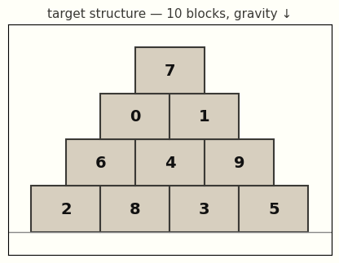

Assembly as Synthesis
Code: luxxxlucy/assembly-as-synthesis.
An interactive viewer can be accessed here.
Jialin Lu · luxxxlucy.github.io
April 12, 2026
TL;DR Assembly is the process of constructing from small parts according to a plan. In this blog we demonstrate that we can solve assembly planning as program synthesis. Under a general framework of learning from mistakes, where it is more formally called counterexample-guided synthesis (CEGIS). Will be introduced later. we show both the old fashioned program synthesis approaches, and then the more modern neueral approaches using large language and vision models.
The two approaches sit at opposite ends of the spectrum, and each's strength is also precisely its inherent weakness. Symbolic synthesis encodes the problem elegantly, runs efficiently, but it does not has a good prior nor common sense baked in about the physical world. Meanwhile neural synthesis offers only stochastic results, yet it absorbs rich priors about the world we live in.Those priors, of course, do not come for free: training and serving such models carries a considerable carbon footprint.
Introduction
An assembly plan is a program.
In an extremely simplified way, building a wall (a pyramid, an arch, etc) is really about figureing out a sequence of primitive actions: place this block here, and then that one there. Reality requires the assembly plan to be valid and feasible, in the sense that the assembly process needs to satisfy the law of gravity, partially-built object needs to be stable Otherwise some kind of scaffolding is needed; let us we not discuss the other consideratoons for assembly nor scaffolding in this simplified world., etc.
It is therefore natural to think assembly planning as a program synthesis problem. To keep everything simple, let us assume we have a simplified world, where we want to build a target structure that consists of blocks. We also defines a set of rules in this toy world as follows:
- In this world we have a gravity that drags things down to ground.
- We say we only have a stupid robot for the assembly that can only place a block from top down and cannot temporarily move other blocks. And so the placement of new blocks should not have any collisions with the current blocks.
- Partial structures should remain stable, otherwise the structure would collapse.
- The goal is to have a assembly plan that the robot can put a block one at a time to construct the targeted design.
A actual program might look like this:
<program>
<action> place block id=1 </action>
<action> place block id=3 </action>
<action> place block id=0 </action>
<action> place block id=2 </action>
<action> place block id=4 </action>
<action> place block id=5 </action>
<action> place block id=7 </action>
<action> place block id=6 </action>
<action> place block id=8 </action>
<action> place block id=9 </action>
</program>
Or with some syntax sugar, we can write it simply as plan([1, 3, 0, 2, 4, 5, 7, 6, 8, 9]).
This should be a simple setting for us to start with. And by this point it shall be apparent to the readers that this is a trivial task, and indeed it is intentionally designed to be so. To make it more explicit, such an assembly plan might be described as a procedural routine.
Solving it with a try-and-learn loop
Ultimately every problem-solving in the end is simply try-and-learn, nor is ours an exception. Unless some oracle or good heuristic is provided, a problem sovler will try, fail, learn from the feedback and then try again.
This setting is more akin to reinforcement learning (RL). In each turn the agent proposes new actions; the environment returns feedback; the agent adjusts and tries again. Using a slightly more trendy buzzword, we can describe it as an in-context RL agent.
In order to let the agent learn from the feedback and then use it to guide its decision next time, the try-and-learn agent only needs one cirtical component: memory. We supplement the agent with a memory, we stored the lessions we learned from the feedback in the memory, and the memory can guide it make better decisions in the future. It is a simple (and natural) idea, but it is still a very vague idea, as we do not really properly define what is a lesson and what is this memory, nor do we know how we can define and mechanically compute on it.
In order to make it computable, when we define the lesson learned as logical clauses, and that the memory as a concatenation of all the learned clauses combined, we now have counterexample-guided inductive synthesis (CEGIS). Armando Solar-Lezama, Program synthesis by Sketching, PhD thesis 2008. Though similar ideas are already present in earlier literature. In this post I will swap five different agents into the same loop. The loop with one twist: the environment does more than score. In each round, the agent learns the failure and turns into memory, and it becomes a rule that the next round has to respect.
The lessons learned in this environment are a precedence clause, A must be placed before B — in our running example, block 6 must be placed before block 8.
The environment decides pass or fail, and on fail it explains why. Concretely we run a chain of three cheap physics checks: kinematic (can the block descend into its slot without intersecting anything already placed?), stability (does the partial structure stand under gravity, friction, and compression-only contact? an LP equilibrium test), landing (does the target slot actually catch the block?). Code in src/counterplan/verifiers/.
This precedence clause is what the agent commits to memory.
The same trick as CDCL clause learning in SAT solvers.
A simple agent: random search with learned dependencies
Here we start with a simplest agent possible: it proposes new actions (which block to place) randomly, hands it to the verifier, and learn from whatever the precedence clauses come back into memory.
For example, the following traces shows that in the first round, the agent continue proposing new actions, let the enviroment verify, and then when it failed, it learns a precedence clause, a lesson.
TRY 1: no prior constraints place 0 -> OK place 1 -> OK place 2 -> OK place 4 -> OK place 5 -> OK place 3 -> OK place 8 -> OK place 6 -> FAIL (kinematic): block 6 cannot descend, blocked by 8 learn: 6 must be placed before 8
The clause 6 before 8 is returned by the enviroment the verifier when block 6's descent path is blocked by block 8. The loop writes that one line into memory (concretely, a list of (a, b) pairs kept next to the agent). On the next round the agent filters its random proposals to those consistent with memory clauses, so the same mistake will not happen again.
Retry and retry with the memory.
TRY 2: memory = { 6 before 8 }
place 1 -> OK
place 3 -> OK
place 0 -> OK
place 2 -> OK
place 4 -> OK
place 5 -> OK
place 7 -> OK
place 6 -> OK
place 8 -> OK
place 9 -> OK
success. final plan: [1, 3, 0, 2, 4, 5, 7, 6, 8, 9]
That is CEGIS in simplest form. The rest of the post swaps the implementation of the agent, essentially how the lesson and memory is represented (Z3, LLMs, VLMs). The general loop stays the same.
Symbolic synthesis: Sketch and the SMT route
A more formal and old-school symbolic approach would formulate the problem, and the lessons all as symbolic objects of constraints, i.e. as a set of logical constraints and hands them to a backend incremental SMT solver. SMT stands for satisfiability modulo theories. Think of it as SAT plus a pluggable theory (integers, linear real arithmetic, arrays) so you can write math-like statements and the solver reasons about them. Z3 is the canonical tool maintained by Microsoft. Let \(P\) be a candidate program and \(\varphi\) the specification. A verifier \(V(P)\) returns either pass or a counterexample \(c\) witnessing \(\neg\varphi(P)\). CEGIS maintains a constraint set \(\Phi\) that grows with each \(c\):
\[ \begin{aligned} &\textbf{repeat:} \\ &\quad P \leftarrow \text{Propose}(\Phi) \\ &\quad c \leftarrow V(P) \\ &\quad \textbf{if } c = \bot:\ \textbf{return } P \\ &\quad \Phi \leftarrow \Phi \cup \text{Generalise}(c) \end{aligned} \]
This loop is what powered some of the most celebrated program-synthesis results.
Sketch (Solar-Lezama, Program Synthesis by Sketching, Berkeley, 2008) chose an SMT solver for Propose: the user writes a partial program with holes, the verifier checks against input/output examples, and unsat cores become new constraints. FlashFill (Gulwani, Automating String Processing in Spreadsheets Using Input-Output Examples, POPL 2011; shipped in Excel) does the same for spreadsheet string transformations. Both lean on a mature SMT backend and spend their budget on the encoding.
Given blockIDs as the set of available block identifiers, the actual assembly plan of plan([...]) will be defined formally as:
\[ \begin{aligned} &\mathsf{Plan}\bigl(\mathsf{action}[0],\,\dots,\,\mathsf{action}[n-1]\bigr), \\[2pt] &\text{where } \mathsf{action}[k] \in \mathsf{BlockIds}, \quad k = 0, \dots, n-1. \end{aligned} \]
Every learned precedence "A before B" becomes one logical clause: Z3 supports quantifier-free statements directly.
\[ \forall\, k.\ \mathsf{action}[k] = B \;\Longrightarrow\; \exists\, k' < k.\ \mathsf{action}[k' ] = A \]
In Python with Z3 that is essentially a direct transliteration.
The whole agent in twenty-odd lines (full source: src/counterplan/z3_solver.py). The only input from the verifier is the list of (a, b) precedence pairs; the solver does the rest.
from z3 import Solver, Int, Distinct, \
And, Or, Implies, sat
# action[k]: block placed at step k
action = [Int(f"a_{k}") for k in range(n)]
solver = Solver()
solver.add(Distinct(*action))
for a in action:
solver.add(Or([a == bid
for bid in block_ids]))
# "a before b" as one clause:
def precedence(a, b):
return And([
Implies(action[k] == b,
Or([action[kp] == a
for kp in range(k)])
if k > 0 else False)
for k in range(n)])
while solver.check() == sat:
plan = [solver.model()
.eval(action[k]).as_long()
for k in range(n)]
failures = verify(structure, plan)
if not failures:
return plan
for (a, b) in failures:
solver.add(precedence(a, b))
# unsat: provably infeasible.
z3.Solver.check(); the MEMORY is a set of SMT assertions; the memory update is solver.add(). The VERIFIER is the same chain of Python physics checks as before.
Whatever the assembly plan the Z3 returns is is a feasible plan. If Z3 returns unsat, the structure is provably infeasible, which is the good thing about it. On pyramid_10, Z3 converges in six rounds.
loading…
Note that in fact this is only a simple version. SMT also provides ways to write custom theories so that stability equivilence can be incorporated to further improve the search. Meanwhile, it might appears that our sequence encoding repeats a lot of work because many orderings actions might produce the same partial structures. But Z3 internally have an e-graph (Tate et al., Equality Saturation: A New Approach to Optimization, 2010) that could compress equivalent partial structures so we in fact have the search space nicely pruned.
What does the solver actually know?
Bear with me if you follow here to me. Z3/SMT is a huge bulk of work, even though it backs a lot of critical tasks in this world, it is still not quite accessible and easy to follow or use. So is most of the old-fashioned literature: the more you dig in, the more it becomes entangled with logic, programming language research, type theory, constraints, and proofs. I still remember trying a course on logic during my masters at SFU with Evgenia Ternovska, which make me realize that I am not that kind of material. I barely past it. However, I want to assure you that the following sections will not be like it, as we are now walking into the territory of deep learning. And indeed, things have changed considerably.
Even though we have those fancy tools and solvers, we still have one major questions: if this is a physical task, human could very quickly solve it by one round, as we understand for such a trivial task and design target, we just place the lower blocks first and then the upper ones. Why is it difficult that these solvers would needs multiple rounds of try-and-learn?
The reason is simply that the solvers we present so far does not really understand the physical world. The simple random agent and Z3 both produced feasible plans, but neither knew a thing about gravity, support, or blocks. All either agent ever saw was integer ids and inequalities like pos(6) < pos(8). The story about why 6 must come before 8 (block 8 sits above block 6, its descent path is blocked) lives entirely in an abstract space like a blackbox.
In fact, we can do a extreme though experiment here, we can switch to a new task of making omelettes, and we can find out that this new task have the exact same problem encoding:
Say you are writing a recipe: whisk before folding, preheat before baking, chop before sautéing. Transcribe those constraints in the same pos(a) < pos(b) form and ask Z3 for a linear order. From Z3's point of view, making pyramids and making omelettes are indistinguishable.
That is the beauty and the curse of such symbolic approaches. The encoding is where the labor of abstraction is done: a human manually convert the problem into an encoding/formulation, and the solver sees nothing beyond it. The solver focus on and only on this abstract symbolic formulation so that it can solve it efficiently. However, this is also what prevent it from obtaining trivial solutions as it does not have any knowledge about gravity, supports, etc.
Neural synthesis: LLM and VLM agents
The symbolic route runs on abstract encodings and ignores the world. The neural approach does the opposite. In the opposite, it is grounded with physical knowledge. A language or vision language model has already read a lot of human writing or images about pyramids, arches, scaffolds, gravity, load-bearing and in general much richer knowledge. So we just hand it the task and often it returns a working plan on the first try; when it does not, the same verifier rejects the model's plan just as it rejected Z3's, only now the rejection can be directly used and appended to the memory as plain English.
Let us begin with using a LLM to solve it. For the target structure, we can trivially describe it in plain text: model coordinates, sizes, and support relationships. Below is a prompt that we use to feed into a LLM:
There are 10 blocks and the ground plane at y=0.0. Gravity points down (−y). A block can only descend into its slot straight from above. Blocks resting on the ground: [0, 2, 3, 1]. Blocks with nothing on top of them (exposed upper surface): [9].
Per-block geometry (sorted bottom-to-top, then left-to-right):
block 0: centroid=(−2.25, +0.50), size=1.50×1.00, rests on ['ground'], supports blocks above: [4].
block 2: centroid=(−0.75, +0.50), size=1.50×1.00, rests on ['ground'], supports blocks above: [4, 5].
block 3: centroid=(+0.75, +0.50), size=1.50×1.00, rests on ['ground'], supports blocks above: [5, 6].
…
The model replies through a tool call, submit_plan(plan: list[int]).
The verifier chain underneath is the same Python code; only the audience of its failure messages has shifted, from logical clauses to English sentences, a failure message would be like this:
REJECTED at step 6: block 2 cannot descend (kinematic), blocked by [5].
Learned lesson: place block 2 before block 5 (kinematic drop path intersected). Call submit_plan again with a plan that respects these constraints.
In this way, the memory we previously introduces now coinsides with the recent usage of memory to refer to the LLM's context/history prompt. As now the entire sessions' text, the enlarged prompt, is the memory.
Although we can find that, unsurprisingly, such memory update mechanism is not really needed.
With the prompt containing the geometric information, pyramid_10 can be solved in one-shot: the model applies its "bottom first" prior and returns a feasible plan in a single round.
We can do another experiment that just gives the LLM a prompt that has no such geometric description, we can see that it falls back almost like the previously tested simple random agent and Z3. We deliberately isolate the geometric descriptions and give it a plain prompt, now contains only the adjacency graph, with block ids randomly permuted to avoid any leakage of hints. In this way, the LLM would now degrade to random proposals, learning these blackbox world verifier and would need multiple round to solve it.
// NOTE for the entire of this below prompt, make it in margin note. AndBlocks (id, contact neighbours):
id=2, neighbors=[0, 3, 5].
id=8, neighbors=[5, 6, 9].
id=6, neighbors=[3, 8].
id=1, neighbors=[0, 4, 5].
… (order scrambled, 10 entries total).No coordinates are given, and no information about which block is above which. Block ids are arbitrary labels and do NOT imply a placement order. Gravity is the only physics rule — you must place lower blocks before the blocks resting on them.
Show it a picture! with a VLM
Writing geometry down as text perhaps is not a good idea, we can use an image diretly.
Here we render the target design to a labelled PNG with all the block IDs, and then hand it to a VLM with the same submit_plan tool and the following prompt

The user-turn text is correspondingly bare — the image does all the geometry:
There are 10 blocks with ids [0, 1, 2, 3, 4, 5, 6, 7, 8, 9]. Your job is to find a placement order that passes the verifier.
Call submit_plan with a permutation of all 10 ids.
With a Vision-Language Model (VLM)
We used kimi-k2p5 via Fireworks API, this is like less than 0.01$.
playing as the agent, pyramid_10 are unsurprisingly solved in one shot. The VLM does not need to be told with anything extra, it can simply see everything.
Comparision
They say no blog should finish without a plot. So here it is showing the five methods we explained so far, working with the same loop, the same enviroment. The metric is best-so-far block similarity: the fraction of blocks the agent has ever successfully placed before a verifier failure. A score of 1.0 means a fully feasible plan.
pyramid_10. Symbolic agents (random, Z3) climb step-by-step as the verifier teaches them precedence constraints. The no-geometry LLM lands in the same regime as random;
The LLM (with proper geometric description) and VLM (with an image) both solve it in one shot.
Discussion
The two approches of symbolic and neural approaches are mirror images of each other. Symbolic synthesis encodes the problem into a formalism cut off from the world and runs a solver that manipulates only symbols. Neural synthesis hands it to a model that already carries rich priors about the world, in whichever modality (text, images). Their strengths and weaknesses are the same fact read from opposite sides.
Symbolic synthesis is powerful because it knows nothing: its algorithm is agnostic to real world, and that is what lets the same backend solve pyramids, recipes, course scheduling, circuit verification, python package dependency resolution tasks alike, so efficient, so reliable, and so trustworthy. Neural synthesis is powerful because it tries to know a great deal: the priors a foundation model has internalised from terabytes of writing, code, images, videos are exactly what a SAT solver cannot have, and making it so good at guessing.
Cost and speed
For this toy task, the mirror shows up in cycles and dollars too. Symbolic agents are local CPU work — a handful of (incremental) Z3 queries, finishing in a fraction of a second on a laptop, with all the cost sitting up-front in a few minuts of human labor spent on the encoding. Neural agents, on the other hand, push a few thousand tokens through a frontier model per round.
Aside from wall time from my laptop, we can have a very rough estimation of computation.
A successful LLM or VLM run on pyramid_10 costs around \(10^{14}\) FLOPs and roughly one US cent in API fees. The symbolic route is effectively free at runtime and expensive at design time; the neural route is the opposite.
Very rough estimation. The LLM model we use, DeepSeek-V3p1, activates roughly 37B parameters per token; a successful run on the geometric prompt spends a few thousand tokens, giving \(\sim 2 \times 37\mathrm{B} \times 3\mathrm{K} \approx 2 \times 10^{14}\) FLOPs. Kimi-K2p5 is in the same ballpark. I am not good at these estimations, so my formula might be wrong.
Ending worlds
Neither paradigm has to win. And in fact, what we want that can actually make a difference, perhaps is something between.
We want methods that have reasonable prior about the real world, meanwhile we also want methods can solve complicated problems (thousands, millions of contraints) reliably. The simple pyramid-10 task might give reader a false
impression that the LLM/VLM is a clear win; but that is not true.
LLM/VLM would suffer hugely when we have a much larger problem that is industrial level.
I think we will need the LLM/VLM to understand the error (stored as plain text, or in any other format) so that
we can have more freedom is designing the feedback we can get from the enviroment, and then we shall also
enable them with the right harness/scaffolding that it can know when to rely on its internal knowledge to make
quick decisions, or to invoke a more reliable tool and delegate that real complicated planning to the right tool.
In this way we can probably has the best outcome.